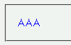
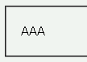

カンマ区切りでセレクタを複数指定するとき、その中に未対応のセレクタが含まれる場合はブロック全体が無視される。対応しているセレクタも無視する。
<style type="text/css">
p.a, p+em {
color: blue;
}
</style>
<p class="a">AAA</p>
AAA
WinIEは隣接セレクタ（+）には対応していません。
Moz1.0での表示（標準モード）
WinIE6.0での表示（標準モード）
WinIEは公式にはCSS1サポートUAです。また、隣接セレクタはCSS1では定義されていません。従ってCSS1としては、不正なセレクタを含むブロックを無視するのは妥当な振る舞いです。